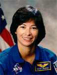

Lyndon B. Johnson Space Center
Houston, Texas 77058
|
National Aeronautics and Space Administration Lyndon B. Johnson Space Center Houston, Texas 77058 |
 |
Biographical Data |
||
Patricia Hilliard Robertson (M.D.)
NASA Astronaut (Mission Specialist Candidate)(Deceased)
PERSONAL DATA: Born March 12, 1963 in Indiana, Pennsylvania. Died May 24, 2001 of injuries sustained in the crash of a private plane at Wolfe Air Park, Manvel, Texas. Married to Scott Robertson. She was the daughter of Ilse Hilliard and the late Harold Hilliard of Homer City, Pennsylvania.
EDUCATION: Graduated from Homer Center High School, Homer City, Pennsylvania In 1980; received a bachelor of science degree in biology from Indiana University of Pennsylvania in 1985, and a medical degree from the Medical College of Pennsylvania in 1989. Completed a three year residency in Family Medicine in 1992 and was certified by the American Board of Family Practice in the same year. Completed a two year fellowship in Space Medicine at the University of Texas Medical Branch and NASA Johnson Space Center in 1997, which included the Aerospace Medicine Primary Course at Brooks Air Force Base.
ORGANIZATIONS:Aerospace Medicine Association, American Association of Family Practice, Experimental Aircraft Association, International Aerobatic Club, Aircraft Owners and Pilots Association.
SPECIAL HONORS:NASA Performance Award, Young Investigator Award Finalist (Aerospace Medicine Association).
EXPERIENCE:After completing her training in Family Medicine in 1992, Dr. Robertson joined a group practice in Erie, Pennsylvania. She was on the staff of St. Vincent hospital for three years where she served as the clinical coordinator for medical student training, and also provided training and supervision for resident physicians. In 1995 Dr. Robertson was one of two fellows selected to study aerospace medicine at the University of Texas Medical Branch (UTMB), Galveston, and at the Johnson Space Center, Houston. While enrolled as a Space Medicine Fellow, Dr. Robertson completed a research project where she studied eccentric and concentric resistive exercise countermeasures for space flight. Dr. Robertson also served as a member of the faculty at UTMB in the Departments of Family Medicine and Emergency Medicine. In 1997, Dr. Robertson joined the Flight Medicine Clinic at Johnson Space Center, where she provided health care for astronauts and their families, and served as Chairman of the Bone, Muscle, and Exercise Integrated Product Team.
Dr. Robertson was a multiengine rated flight instructor and avid aerobatic pilot. In her free time, she enjoyed flight instructing, aerobatics, and flying with her husband. She had accumulated over 1500 hours of flight time.
NASA EXPERIENCE:Selected by NASA in June 1998, Dr. Robertson reported for training in August 1998. Astronaut Candidate Training included orientation briefings and tours, numerous scientific and technical briefings, intensive instruction in Shuttle and International Space Station systems, physiological training and ground school to prepare for T-38 flight training, as well as learning water and wilderness survival techniques. Among her technical assignments she served as the office representative for the Crew Healthcare System (CHeCS), and as Crew Support Astronaut (CSA) for the ISS Expedition 2 Crew.
MAY 2001
{kind=link}